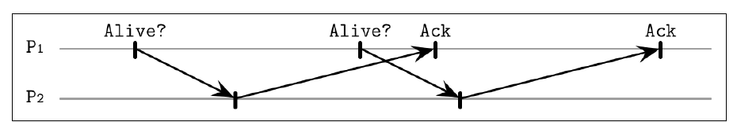
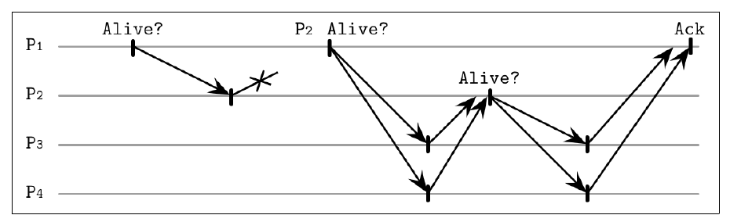
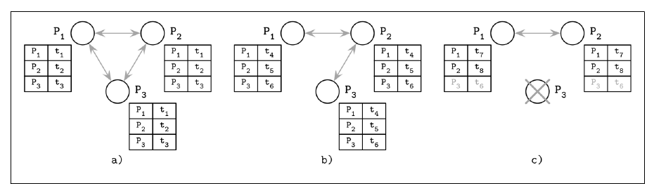

فصل ۹ · صص. ۱۹۵–۲۰۳
تشخیص شکست
Failure Detection
Database Internals, 1st Edition
یک process شکسته که همینطور با آن تماس گرفته میشود latency را بالا و availability را پایین میبرد، پس شکستها باید بههنگام تشخیص داده شوند (ص. ۱۹۵). ولی بی فرض زمانبندی، processی از کار افتاده از کندی تشخیصدادنی نیست: این بازهم قضیهی FLP است (ص. ۱۹۵). failure detector زیرسیستمی محلی است که processهای شکسته یا دستنیافتنی را شناسایی میکند، تا بیرون گذاشته شوند و liveness تضمین شود و در همان حال ایمنی نگه داشته (ص. ۱۹۵). هر detectorی مثبت کاذب، یعنی گمان بردن به processهای زنده، را با منفی کاذب، یعنی به processهای مرده بها دادن، و کارایی را با دقت بدهبستان میکند. هیچ detectorی نمیتواند هم دقیق باشد و هم کارا (صص. ۱۹۵–۱۹۶).
فصل چند رویکرد را مرور میکند:
| detector | ایده |
|---|---|
| ping و heartbeat با مهلت، که Akka است | پس از سکوتی ثابت همتایی را گمانبرده علامت بزن |
| Heartbeat از آگیلرا و همکاران | بی timeout؛ heartbeatهایی را میشمارد که روی مسیرها پخش شدهاند |
| heartbeat برونسپاریشدهی SWIM | از همتاهای تصادفی بخواه بهجای تو کاوش کنند |
| φ-accrual که Cassandra و Akka است | سطح گمان پیوستهای که از توزیع زمانهای رسیدن گذشته حساب میشود |
| از جنس gossip | جدولهای heartbeat تکرارشده |
| FUSE | هر شکست تنهایی را با سکوت کردن به شکست گروهی تبدیل میکند |
فهرست خود فصل (از فهرست مطالب کتاب)
- بخش heartbeat و ping — ص. ۱۹۶
- بخش failure detector بی timeout — ص. ۱۹۷
- بخش heartbeat برونسپاریشده — ص. ۱۹۸
- بخش failure detector φ-accrual — ص. ۱۹۹
- بخش gossip و تشخیص شکست — ص. ۲۰۰
- برگرداندن صورت مسئلهی تشخیص شکست — ص. ۲۰۱
- خلاصه — ص. ۲۰۲
از کتاب
مقدمه
واژههای مرده و شکسته و از کار افتاده processی را وصف میکنند که تماماً ایستاده. واژههای بیپاسخ و عیبدار و کند processهای گمانبرده را وصف میکنند، که ممکن است مرده باشند یا نه (ص. ۱۹۵). شکستها در سطح پیوند، یعنی پیام گمشده یا کند، یا در سطح پردازه، یعنی از کار افتادن یا کندی، رخ میدهند، و کندی همیشه از شکست تشخیصدادنی نیست (ص. ۱۹۵).
| خاصیت | معنا (صص. ۱۹۵–۱۹۶) |
|---|---|
| liveness | رویدادی خواسته باید رخ بدهد: اگر processی بشکند، تشخیص داده خواهد شد |
| ایمنی | رویدادهای ناخواسته رخ نمیدهند: processی که مرده علامت خورده واقعاً مرده بود |
| تمامیت | هر عضو نشکستهای در غایت آن شکست را میبیند؛ الگوریتم پیشرفت میکند |
| کارایی | شکستها چقدر زود شناسایی میشوند |
| دقت | بی اتهام کاذب و بی شکست از دست رفته |
بیرون گذاشتن processهای شکسته از کار حرامشده میپرهیزد و جلو پخش خطا و شکست آبشاری را میگیرد، ولی بیرون گذاشتن گمانبردهای زنده availability را کم میکند (ص. ۱۹۶). کارایی و دقت مثل پارامتری تنظیمپذیر رفتار میکنند، و detectorها مجازند خطا کنند، از چاندرا و توگ. detectorهای شکست زیر consensus و پخش اتمی را میگیرند. فصل فرض میگیرد هیچ شکست Byzantineی نیست (ص. ۱۹۶).
از کتاب
پروتکل heartbeat و ping
| مکانیزم | چه کسی شروع میکند (ص. ۱۹۶) |
|---|---|
| ping | پاینده پیامی میفرستد و درون دورهای زمانی چشم پاسخ دارد |
| heartbeat | process پاییدهشده به همتاهایش خبر میدهد که زنده است |
هر processی فهرستی از همتاهای زنده و مرده و گمانبرده را با زمان آخرین پاسخشان نگه میدارد، و به همتایی که زیادی پاسخ نمیدهد گمان میبرد (ص. ۱۹۷). تأییدهای معطلی که پس از ping بعدی برسند میتوانند processی زنده را خوابیده علامت بزنند (شکلهای ۹-۱ و ۹-۲). failure detector مهلتی در Akka اگر heartbeatی درون بازهای ثابت ثبت نشود شکست گزارش میدهد (ص. ۱۹۷). بدیها: دقت به فراوانی ping و timeoutی که با دقت برداشته شده وابسته است، و detector نمیگیرد که processهای دیگر آن همتا را چطور میبینند (ص. ۱۹۷).


پروتکل heartbeat و ping
نقش failure detector بدون timeout
الگوریتم Heartbeat آگیلرا و همکاران تنها heartbeatها را میشمارد، پس زیر فرضهای asynchronous کار میکند (ص. ۱۹۷). مسیرهای منصفانه میان processهای درست را فرض میگیرد و اینکه هر processی بقیه را میشناسد (صص. ۱۹۷–۱۹۸).
- پیام heartbeat آن مسیری را که پیموده بهعلاوهی شناسهای یکتا حمل میکند.
- گیرندهای شمارندهی هر processی روی آن مسیر را میافزاید، خودش را میچسباند، و پیام را به processهایی میفرستد که هنوز روی آن نیستند. پخش شدن همین که هر process شناختهای در مسیر پیدا شود میایستد (ص. ۱۹۸).
- چون heartbeatها مسیرهای زیادی را میگیرند، processی میتواند درست زنده علامت بخورد حتی وقتی پیوند مستقیم به آن عیبدار باشد (ص. ۱۹۸).
- شمارندهها نمایی جهانی و بهنجار میسازند، ولی برداشتن آستانهای برای تفسیرشان دشوار است. آستانهی بد باز هم گمانهای کاذب میسازد (ص. ۱۹۸).
پروتکل heartbeat و ping
پروتکل heartbeat برونسپاریشده
روش SWIM، که Scalable Weakly Consistent Infection-style Process Group Membership است، زنده بودن را از دید همسایهها میسنجد، و هر processی لازم است تنها زیرمجموعهای از همتاها را بشناسد (ص. ۱۹۸).


این هم دستیافتنی بودن مستقیم و هم غیرمستقیم را به حساب میآورد، تصمیم را بین اعضا پخش میکند، از پخش فراگیر میپرهیزد، و زود اطلاع جمع میکند چون کاوشها موازی اجرا میشوند (ص. ۱۹۹).
Prometheus هر target را scrape میکند و metric up همان ping است؛ liveness probe در Kubernetes همان heartbeat.
?نوبت شما · alert «loader down» روی up == 0 در یک scrape تنها هر چند روز یک بار بیدلیل fire میشود. چه میکنید؟دیدن پاسخ
یک scrape گمشده دلیل شکست نیست؛ for: 5m بگذارید تا چند نمونهی پشتسرهم لازم باشد. timeout کوتاه تشخیص را سریع ولی false positive را زیاد میکند؛ این بدهبستان دقت و سرعت محور failure detection است (صص. ۱۹۶–۱۹۹).
از کتاب
failure detector φ-accrual
نقش detector φ-accrual از هایاشیبارا و همکاران در ۲۰۰۴، بهجای سرپا یا خواب دوگانی، مقیاسی پیوسته از احتمال از کار افتادن به کار میبرد (ص. ۱۹۹).
- یک پنجرهی لغزان از زمانهای رسیدن heartbeatهای تازه نگه میدارد، که نرمالتوزیع فرض میشوند، و میانگین و واریانسشان را تخمین میزند (صص. ۱۹۹–۲۰۰).
- از اینها حساب میکند که احتمال رسیدن heartbeatی t یکای زمانی پس از آخری چقدر است، و از آن φ را، یعنی سطح گمان: اگر همین حالا نود را مرده اعلام کنیم احتمال خطا چقدر است (ص. ۲۰۰).
- وقتی φ به آستانهای برسد، نود خوابیده علامت میخورد. مقیاس با شرایط متغیر شبکه وفق مییابد (ص. ۱۹۹).
| زیرسیستم | نقش (صص. ۱۹۹–۲۰۰) |
|---|---|
| پاییدن | با ping یا heartbeat یا نمونهگیری درخواستپاسخ نمونههای زنده بودن را جمع کن |
| تفسیر | تصمیم بگیر که به آن process گمان ببری یا نه |
| کنش | callbackی وقتی گمانبرده شود |
از مؤسسهی پیشرفتهی علم و فناوری ژاپن میآید و در Cassandra و Akka به کار میرود، در کنار detector مهلتی Akka (ص. ۲۰۰).
jobهای ما فاصلهی اجرای متفاوتی دارند: بعضی ساعتی، بعضی شبانه.
?نوبت شما · چرا alert بر اساس «مدت سکوت نسبت به فاصلهی معمول هر job» بهتر از یک آستانهی ثابت است؟دیدن پاسخ
job ساعتی و job شبانه سکوت عادی متفاوتی دارند؛ آستانهی ثابت یا برای یکی دیر است یا برای دیگری پرسروصدا. φ-accrual از تاریخچهی فاصلهها توزیع میسازد و بهجای بله یا نه، سطح شک میدهد (صص. ۱۹۹–۲۰۰).
امتحان کنید
failure detector φ-accrual
باز کردن در صفحهی کامل ↗ · این شبیهسازی مدل خود vault از سازوکاری است که کتاب شرح میدهد.
از کتاب
پروتکل gossip و تشخیص شکست
سرویس تشخیص شکست از جنس gossip از ون رنسه و همکاران از تکیه به نمای یک نود میپرهیزد (ص. ۲۰۰).
- هر عضوی فهرستی از اعضا و شمارندههای heartbeatشان و timestamp محلی آخرین افزایش هر شمارندهای را نگه میدارد.
- دورهای، عضوی شمارندهی خودش را میافزاید و فهرستش را به همسایهای تصادفی میفرستد، که با مال خودش merge میکند (ص. ۲۰۰).
- عضوی که شمارندهاش بهقدر کافی نرفته باشد شکسته شمرده میشود. آن timeout را با دقت بردارید تا مثبت کاذب کم بماند (ص. ۲۰۰).
- پهنای باند بدترین حالت سقفدار است و دستبالا خطی با شمار processها رشد میکند (ص. ۲۰۰).
شکل ۹-۴ (ص. ۲۰۱):


- هر سه process حرف میزنند و timestampهایشان را بهروز میکنند.
- مفهوم process P3 نمیتواند به P1 برسد، ولی timestampش یعنی t6 باز هم از راه P2 به P1 میرسد.
- مفهوم process P3 از کار میافتد، فرستادن بهروزرسانی را بس میکند و شکسته تشخیص داده میشود.
آن نما نودهای زیادی را تجمیع میکند، پس تصمیمها قابل اطمیناناند. gossip پیام بیشتری خرج دارد ولی اطلاع را قابل اطمینانتر پخش میکند (ص. ۲۰۱).
از کتاب
برگرداندن صورت مسئلهی تشخیص شکست
سیستم FUSE، که سرویس خبر دادن شکست است، روی پخش ارزان و قابل اطمینان شکست تمرکز میکند، حتی از پارتیشنها رد شده (ص. ۲۰۱). processهای فعال در گروه چیده میشوند. وقتی عضوی نتواند پاسخی بگیرد، بهخاطر از کار افتادن یا پارتیشن یا شکست پیوند، آن عضوی که pingش کرده خودش پاسخ دادن به ping را بس میکند، پس سکوت پخش میشود تا کل گروه آن شکست را تشخیص بدهد (شکل ۹-۵) (صص. ۲۰۱–۲۰۲).
| قدم (ص. ۲۰۲) | حالت |
|---|---|
| الف | همه زندهاند و حرف میزنند |
| ب | process P2 از کار میافتد و پاسخ دادن به ping را بس میکند |
| ج | process P4 تشخیصش میدهد و خودش هم سکوت میکند |
| د | processهای P1 و P3 آن سکوت را میبینند؛ شکست به کل گروه پخش میشود |
تضمین میشود که هر عضوی از شکست گروه خبردار شود. در سوی بد، شکست پیوندی که processی را منزوی کند هم شکستی گروهی میشود، که ممکن است دلخواه باشد یا نه (ص. ۲۰۲).
از کتاب
خلاصه
قضیهی FLP میگوید consensus asynchronous تضمینشدنی نیست، و detectorهای شکست مدل را تقویت میکنند و دقت را با تمامیت بدهبستان. چاندرا و توگ نشان دادند که consensus حتی با detectorی که بینهایت بار خطا کند حلشدنی است (ص. ۲۰۲). رویکردها فرق دارند: ارتباط مستقیم، یا پخش یا gossip، یا سکون یعنی سکوت بهشکل مکانیزم پخش، با مهلت سخت یا مقیاس پیوسته (صص. ۲۰۲–۲۰۳).
مرور
بدهبستانها در یک نگاه
| detector | timeout؟ | نما | قوت | ضعف |
|---|---|---|---|---|
| مهلتی با ping یا heartbeat | ثابت | یک process | ساده | تنظیم؛ یک زاویه |
| Heartbeat با شمردن مسیر | ندارد | شمارندههای جهانی | asynchronous کار میکند؛ از پیوند بد جان به در میبرد | برداشتن آستانه سخت است |
| ping برونسپاریشدهی SWIM | بله | زیرمجموعهی تصادفی | دستیافتنی بودن غیرمستقیم؛ بی پخش فراگیر | یک دور کاوش اضافه |
| φ-accrual | وفقپذیر | یک process بهعلاوهی آمار | با jitter وفق مییابد؛ φ تنظیمپذیر | توزیعی را فرض میگیرد |
| جدول heartbeat با gossip | بله | تجمیعشده | قابل اطمینان؛ از شکست پیوند جان به در میبرد | پیام بیشتر |
| FUSE | بله | گروه | همه از شکستها خبردار میشوند | یک شکست پیوند شکستی گروهی میشود |
مرور
نکتههای کلیدی
- مفهوم liveness: در غایت چیز خوبی رخ میدهد، مثلاً شکستی تشخیص داده میشود. ایمنی: چیز بدی رخ نمیدهد، مثلاً تنها processهای مرده مرده علامت میخورند (صص. ۱۹۵–۱۹۶).
- تمامیت: هر عضو نشکستهای در غایت آن شکست را میبیند. کارایی: چقدر زود. دقت: چقدر دقیق (ص. ۱۹۶).
- مهلتهای ثابت به تنظیم وابستهاند و تنها نمای یک process از شبکه را بازتاب میدهند (ص. ۱۹۷).
- کاوش غیرمستقیم از مستقیم بهتر است. ping برونسپاریشدهی SWIM و جدولهای gossip نودی زنده را «زنده» نگه میدارند حتی وقتی یک پیوند مستقیم شکسته باشد (صص. ۱۹۸–۲۰۱).
- روش φ-accrual با شبکه وفق مییابد. سرپا یا خواب نیست: سطح گمانی است که از میانگین و واریانس زمانهای میانرسیدن تازه حساب میشود (صص. ۱۹۹–۲۰۰).
- مفهوم consensus حتی با failure detectorی که بینهایت بار خطا کند حلشدنی است، از چاندرا و توگ (ص. ۲۰۲).
تمرین
خودتان را بسنجید
پرسشها و پاسخها مال vault است و از روی یادداشتهای بالا نوشته شده؛ پاسخها به صفحههای کتاب ارجاع میدهند.
۲دو ضعف اصلی detector مهلتثابت چیست؟دیدن پاسخ
دقتش به فراوانی ping و timeoutی که برداشته شده وابسته است، و تنها نمای یک process را بازتاب میدهد و نه اینکه بقیه آن همتا را چطور میبینند (ص. ۱۹۷).
۳الگوریتم Heartbeat بی timeout چطور میتواند processی را زنده علامت بزند حتی وقتی پیوند مستقیم به آن شکسته باشد؟دیدن پاسخ
heartbeatها روی مسیرهای زیادی سفر میکنند، و هر گیرندهای شمارندهی هر processی روی مسیر را میافزاید. اطلاع زنده بودن غیرمستقیم میرسد (ص. ۱۹۸).
۴در SWIM، وقتی P2 به pingی پاسخ ندهد process P1 چه میکند؟دیدن پاسخ
از چند عضو تصادفی میخواهد بهجایش P2 را ping کنند. اگر P2 به هر یک پاسخ بدهد، تأیید را به P1 میفرستند (صص. ۱۹۸–۱۹۹).
۵نقش detector φ-accrual از پنجرهی لغزانش چه چیزی را تخمین میزند؟دیدن پاسخ
میانگین و واریانس زمانهای میانرسیدن heartbeat. از اینها احتمال رسیدن heartbeatی پس از سکوت جاری را حساب میکند، که سطح گمان یعنی φ را میدهد (صص. ۱۹۹–۲۰۰).
۶روش FUSE شکستی را چطور پخش میکند؟دیدن پاسخ
با سکوت. عضوی که نتواند به دیگری برسد خودش پاسخ دادن به ping را بس میکند، پس شکست پخش میشود تا کل گروه بداند (صص. ۲۰۱–۲۰۲).
۷چاندرا و توگ دربارهی detectorهای شکست و consensus چه نشان دادند؟دیدن پاسخ
consensus حتی با failure detectorی که شمار بینهایتی خطا کند حلشدنی است (ص. ۲۰۲).
مکمل
فراتر از کتاب
مکمل vault، نه از متن کتاب.
- فرمول φ. با میانگین μ و انحراف معیار σ زمانهای میانرسیدن و Δ یعنی زمان از آخرین heartbeat، داریم φ(Δ) = −log₁₀(1 − F(Δ))، که F تابع توزیع تجمعی نرمال است. مقدار φ = 1 یعنی تقریباً ۱۰٪ احتمال خطا اگر همین حالا گمان ببرید، φ = 2 تقریباً ۱٪، و φ = 3 تقریباً ۰٫۱٪. پیشفرض
phi_convict_thresholdدر Cassandra هشت است. آن widget دقیقاً همین را حساب میکند. - زیرپروتکل گمان SWIM، و افزونههای Lifeguard شرکت HashiCorp که در Consul و Serf به کار میروند، حالتی «گمانبرده» میافزاید که اعضای دیگر میتوانند پیش از اعلام مرگ ردش کنند. این مثبت کاذب از کاوشگری موقت کند را میبرد.
- پروتکل lease نود در Kubernetes به معنای کتاب detectorی مهلتی است: هر kubeletی پیشفرض هر ۱۰ ثانیه object به نام Leaseش را تمدید میکند، و کنترلر نود پس از
node-monitor-grace-periodنود را Unknown علامت میزند.
قدمهای بعدی
ادامه بدهید
پیوندها
- فصلهای مرتبط: فصل ۸: مقدمه و نمای کلی که قضیهی FLP و concurrency را دارد، فصل ۱۰: انتخاب leader که در آن detectorها انتخاب را برمیانگیزند، فصل ۱۲: anti-entropy و پخش که gossip را دارد، و فصل ۱۴: consensus که detectorهای شکست در Paxos و Raft را دارد.